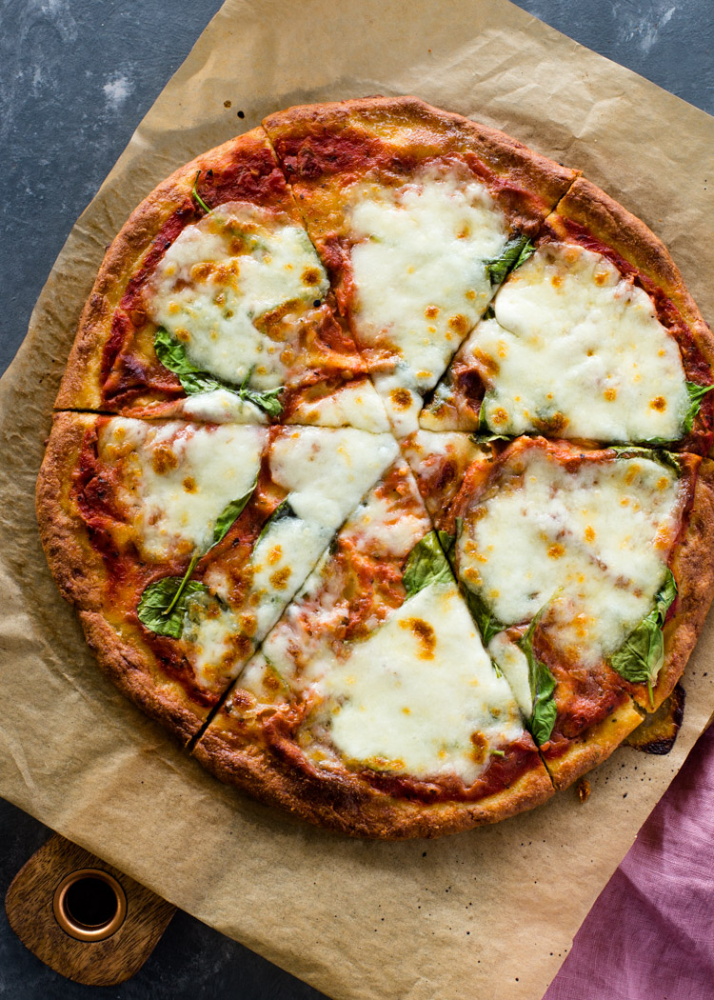

Scones

Ingredients
- 2 cups Mozzarella Cheese
- 1 oz cream cheese
- 1 cup Almond flour
- 1 egg
- 1 teaspoon baking powder
- 1 teaspoon Italian seasoning
- 1 teaspoon garlic powder/li>
- Pepperonni slices (optional)
Cooking Instructions
- Preheat oven to 450 °F.
- Microwave mozzarella and cream cheese for 45 seconds.
- Remove from microwave and add egg, almond flour, baking powder, Italian seasoning, and garlic. Mix well.
- Transfer dough onto a large piece of parchment paper and cover with another piece of parchment paper. Flatten out dough using a rolling pin to about ¼’’ thick. Remove parchment paper and shape with hands if desired.
- Transfer pizza onto a baking sheet. Bake for 10 minutes.
- Remove pizza and top with pepperoni slices or favorite toppings.
- Place pizza back in oven for another 5-8 minutes or until the cheese is bubbly.
Go Back